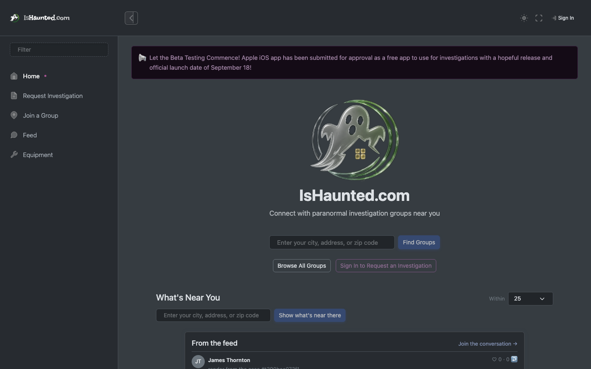
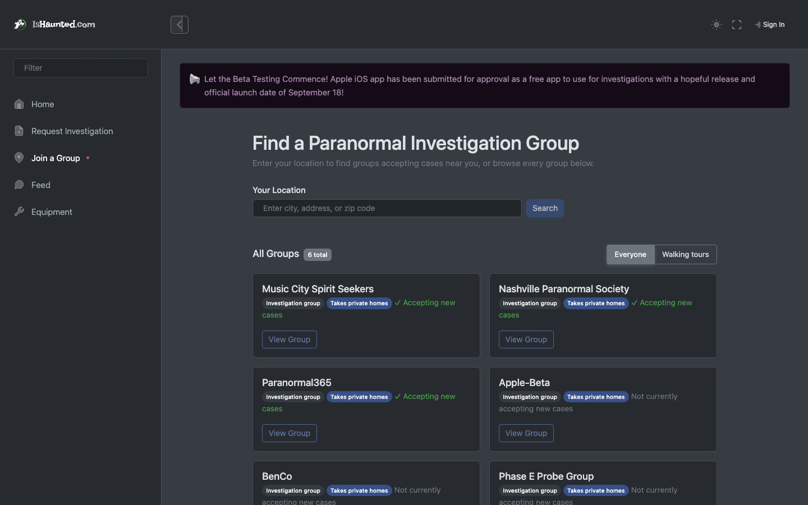
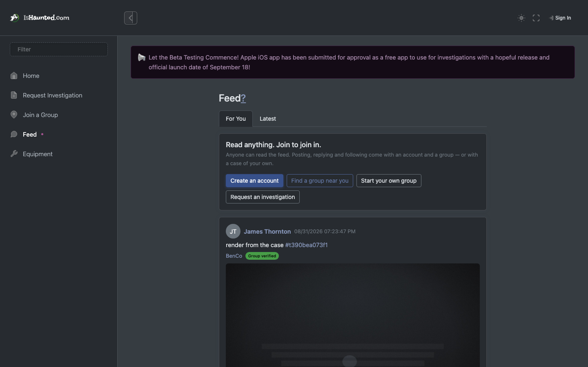
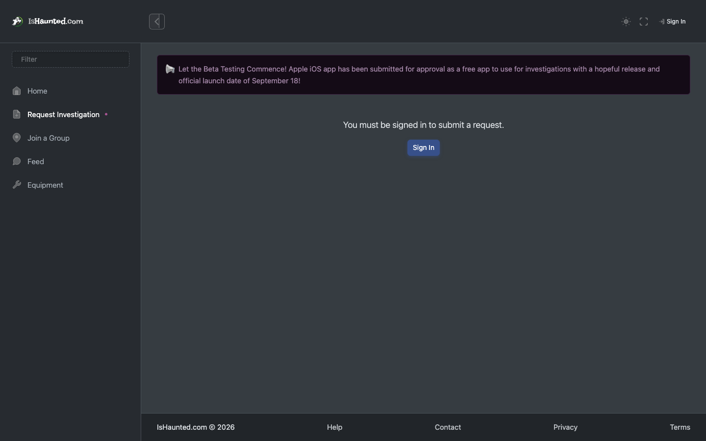
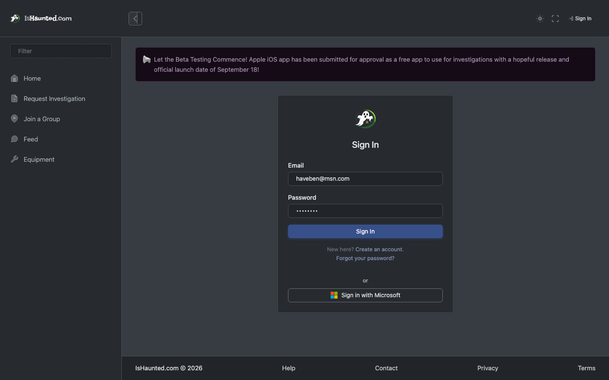
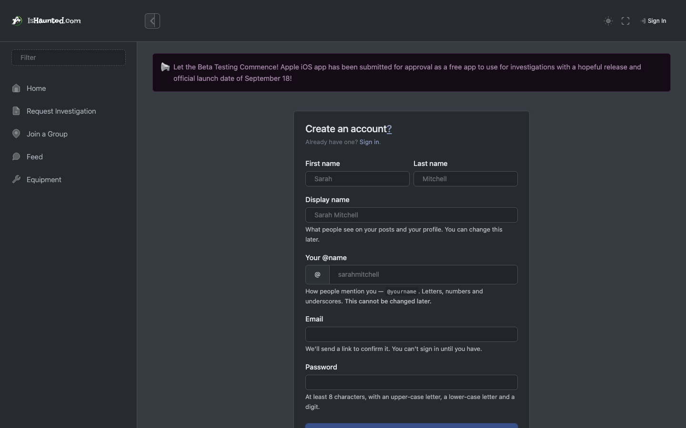
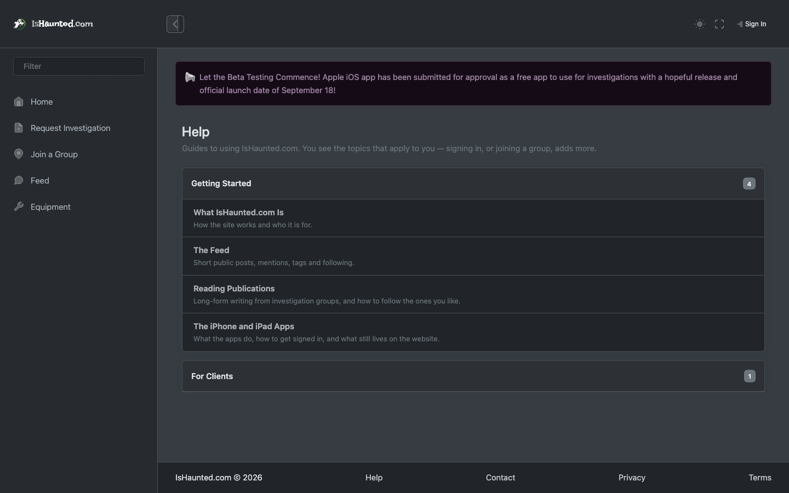

Somebody with no account, who arrived from a search or a link. Written for a developer joining the project.
Every screenshot shows simulated, seeded data, captured in dark mode while signed in as this user type. Nothing here is a real person, case or investigation. Where a page shows a refusal, that is the designed behaviour for this seat.
The visitor is the largest audience and the one with the least patience. Everything they can reach is public on purpose: the site's whole growth argument is that somebody researching a haunted address finds a real archive rather than a sign-up wall.
What they can do: read the feed, browse public places and their archives, find groups near them, read published investigations, and ask a group for help. What they cannot do is anything tied to an identity — which is where the refusals below come from.
Two things gate every surface, and they are different questions:
Your seat in a group — owner, administrator, member, viewer — answers "may this person do this?". The group's plan answers "does this group pay for this at all?". A member of a group whose plan excludes an area is refused for a completely different reason than a viewer who is not allowed to write, and the site says which.
A refusal is never rendered as "nothing here." An empty list and a server
saying no are different facts, and a page that shows the same grey nothing for both teaches people
to distrust it. Every list goes through LoadResult, which carries loading, empty,
refused, session-ended and rate-limited as distinct states — and every one of them has its own
words on screen.
This matters when reading this document: where a screenshot shows a refusal, that is the designed behaviour for this seat, not a broken page.
Home. The front door. Search by place, and what is near you.

Find groups. Groups a person can approach, with what each one covers.

Feed. The public feed. Reading is open to everyone; posting is not.

Request an investigation. The request flow — the main conversion path on the site.

Sign in. Sign in, including Microsoft and Apple.

Sign up. Registration. The @name is permanent and the form says so.

Help. The in-app help, readable without an account.

Refused my cases. A page that needs an account. Note it explains rather than showing an empty list — this is the refusal rule in action.